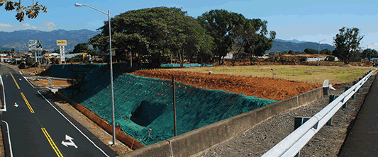
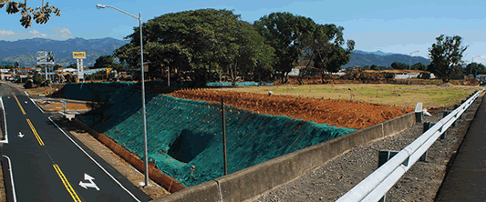

Demarcación Pintura en Frío
Suministramos y damos el servicio de Demarcación con pinturas en frío base solvente o base acuosa con equipos autopropulsados AIRLESS de última tecnología de las prestigiosas marcas EZ LINER y GRACO dotadas de 2 pistolas para fluído y 2 pistolas para aplicación de esferas de vidrio DROP ON, los cuales leconfieren a la pintura las propiedades de reflectividad para visión nocturna.
Demarcación Pintura Termoplástica
Servicio de Demarcación con Pintura Termoplástica (en caliente) con Equipos Autopropulsados para líneas de pavimento de 10, 12 y 15 cms de ancho con aplicación por extrusión y pistolas de atomización para la aplicación de micro esferas de vidrio DROP ON, con Calderas de Prederretido independiente montadas en trailer de transporte. Las máquinas manuales tipo APOLLO III SYSTEM dotadas con dispensador de micro esferas de vidrio y prederretidores incorporados nos confieren flexibilidad e independencia en la demarcación termoplástica de figuras, flechas direccionales, pasos peatonales y letreros de pavimento.
Sistemas de Defensa tipo Flex Beam
Suministramos e instalamos de forma mecanizada Sistemas de Defensa de Acero galvanizado con máquina HINCADORA DE POSTES, con martillo accionado con mecanismos hidráulicos de precisión, dando como resultado una instalación profesional rápida y muy eficiente bajo estándares de la Normativa Europea de equipamiento vial en 1317. Nuestros Sistemas de Defensa han sido probados con ensayos de choque reales.
Señalamiento Vertical
Suministramos e instalamos Señales verticales de tránsito bajo normativa contemplada en el MANUAL CENTROAMERICANO DE DISPOSITIVOS UNIFORMES PARA EL CONTROL DEL TRÁNSITO emitido por la Secretaría de Integración Económica Centroamericana (SIECA).
Otros Productos y servicios
- Borrado de demarcación termoplástica y en frío
- Barandilla de protección peatonal